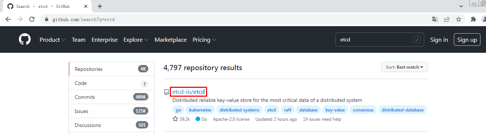
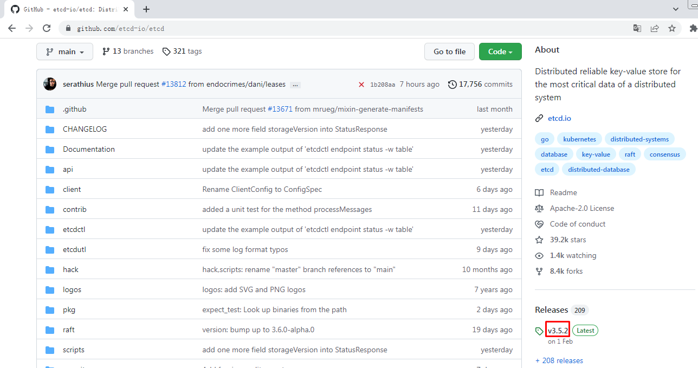
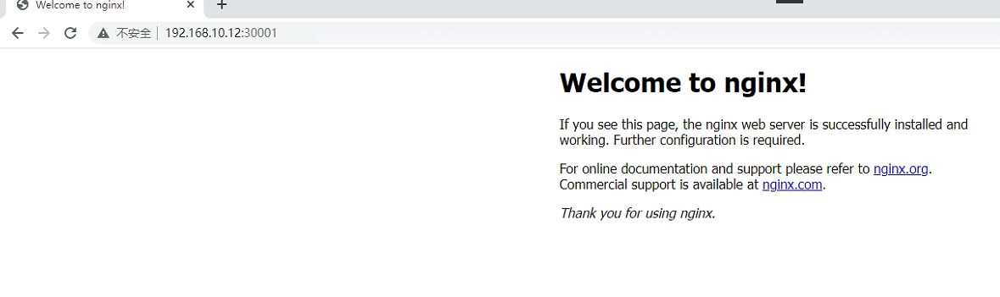

Kubernetes高可用集群二进制部署（Runtime Docker）¶
Kubernetes（简称为：k8s）是Google在2014年6月开源的一个容器集群管理系统，使用Go语言开发，用于管理云平台中多个主机上的容器化的应用，Kubernetes的目标是让部署容器化的应用简单并且高效,Kubernetes提供了资源调度、部署管理、服务发现、扩容缩容、监控，维护等一整套功能，努力成为跨主机集群的自动部署、扩展以及运行应用程序容器的平台。 它支持一系列容器工具, 包括Docker、Containerd等。
一、集群环境准备¶
1.1 主机规划¶
| 主机IP地址 | 主机名 | 主机配置 | 主机角色 | 软件列表 |
|---|---|---|---|---|
| 192.168.10.12 | k8s-master1 | 2C4G | master | kube-apiserver、kube-controller-manager、kube-scheduler、etcd、kubelet、kube-proxy、docker-ce |
| 192.168.10.13 | k8s-master2 | 2C4G | master | kube-apiserver、kube-controller-manager、kube-scheduler、etcd、kubelet、kube-proxy、docker-ce |
| 192.168.10.14 | k8s-master3 | 2C4G | master | kube-apiserver、kube-controller-manager、kube-scheduler、etcd、kubelet、kube-proxy、docker-ce |
| 192.168.10.15 | k8s-worker1 | 2C4G | worker | kubelet、kube-proxy、docker-ce |
| 192.168.10.10 | ha1 | 1C2G | LB | haproxy、keepalived |
| 192.168.10.11 | ha2 | 1C2G | LB | haproxy、keepalived |
| 192.168.10.100 | / | / | VIP(虚拟IP) |
1.2 软件版本¶
| 软件名称 | 版本 | 备注 |
|---|---|---|
| CentOS7 | kernel版本：5.16 | |
| kubernetes | v1.21.10 | |
| etcd | v3.5.2 | 最新版本 |
| calico | v3.19.4 | |
| coredns | v1.8.4 | |
| docker-ce | 20.10.13 | YUM源默认 |
| haproxy | 5.18 | YUM源默认 |
| keepalived | 3.5 | YUM源默认 |
1.3 网络分配¶
| 网络名称 | 网段 | 备注 |
|---|---|---|
| Node网络 | 192.168.10.0/24 | |
| Service网络 | 10.96.0.0/16 | |
| Pod网络 | 10.244.0.0/16 |
二、集群部署¶
2.1主机准备¶
2.1.1 主机名设置¶
hostnamectl set-hostname xxx
关于主机名参见1.1小节主机规划表
2.1.2 主机与IP地址解析¶
cat >> /etc/hosts << EOF
192.168.10.10 ha1
192.168.10.11 ha2
192.168.10.12 k8s-master1
192.168.10.13 k8s-master2
192.168.10.14 k8s-master3
192.168.10.15 k8s-worker1
EOF
2.1.3 主机安全设置¶
2.1.3.1 关闭防火墙¶
systemctl stop firewalld
systemctl disable firewalld
firewall-cmd --state
2.1.3.2 关闭selinux¶
setenforce 0
sed -ri 's/SELINUX=enforcing/SELINUX=disabled/' /etc/selinux/config
sestatus
2.1.4 交换分区设置¶
swapoff -a
sed -ri 's/.*swap.*/#&/' /etc/fstab
echo "vm.swappiness=0" >> /etc/sysctl.conf
sysctl -p
2.1.5 主机系统时间同步¶
安装软件
yum -y install ntpdate
制定时间同步计划任务
crontab -e
0 */1 * * * ntpdate time1.aliyun.com
2.1.6 主机系统优化¶
limit优化
ulimit -SHn 65535
cat <<EOF >> /etc/security/limits.conf
* soft nofile 655360
* hard nofile 131072
* soft nproc 655350
* hard nproc 655350
* soft memlock unlimited
* hard memlock unlimited
EOF
2.1.7 ipvs管理工具安装及模块加载¶
为集群节点安装，负载均衡节点不用安装
yum -y install ipvsadm ipset sysstat conntrack libseccomp
所有节点配置ipvs模块，在内核4.19+版本nf_conntrack_ipv4已经改为nf_conntrack， 4.18以下使用nf_conntrack_ipv4即可：
modprobe -- ip_vs
modprobe -- ip_vs_rr
modprobe -- ip_vs_wrr
modprobe -- ip_vs_sh
modprobe -- nf_conntrack
创建 /etc/modules-load.d/ipvs.conf 并加入以下内容：
cat >/etc/modules-load.d/ipvs.conf <<EOF
ip_vs
ip_vs_lc
ip_vs_wlc
ip_vs_rr
ip_vs_wrr
ip_vs_lblc
ip_vs_lblcr
ip_vs_dh
ip_vs_sh
ip_vs_fo
ip_vs_nq
ip_vs_sed
ip_vs_ftp
ip_vs_sh
nf_conntrack
ip_tables
ip_set
xt_set
ipt_set
ipt_rpfilter
ipt_REJECT
ipip
EOF
设置为开机启动
systemctl enable --now systemd-modules-load.service
2.1.8 Linux内核升级¶
在所有节点中安装,需要重新操作系统更换内核。
[root@localhost ~]# yum -y install perl
[root@localhost ~]# rpm --import https://www.elrepo.org/RPM-GPG-KEY-elrepo.org
[root@localhost ~]# yum -y install https://www.elrepo.org/elrepo-release-7.0-4.el7.elrepo.noarch.rpm
[root@localhost ~]# yum --enablerepo="elrepo-kernel" -y install kernel-ml.x86_64
[root@localhost ~]# grub2-set-default 0
[root@localhost ~]# grub2-mkconfig -o /boot/grub2/grub.cfg
2.1.9 Linux内核优化¶
cat <<EOF > /etc/sysctl.d/k8s.conf
net.ipv4.ip_forward = 1
net.bridge.bridge-nf-call-iptables = 1
net.bridge.bridge-nf-call-ip6tables = 1
fs.may_detach_mounts = 1
vm.overcommit_memory=1
vm.panic_on_oom=0
fs.inotify.max_user_watches=89100
fs.file-max=52706963
fs.nr_open=52706963
net.netfilter.nf_conntrack_max=2310720
net.ipv4.tcp_keepalive_time = 600
net.ipv4.tcp_keepalive_probes = 3
net.ipv4.tcp_keepalive_intvl =15
net.ipv4.tcp_max_tw_buckets = 36000
net.ipv4.tcp_tw_reuse = 1
net.ipv4.tcp_max_orphans = 327680
net.ipv4.tcp_orphan_retries = 3
net.ipv4.tcp_syncookies = 1
net.ipv4.tcp_max_syn_backlog = 16384
net.ipv4.ip_conntrack_max = 131072
net.ipv4.tcp_max_syn_backlog = 16384
net.ipv4.tcp_timestamps = 0
net.core.somaxconn = 16384
EOF
sysctl --system
所有节点配置完内核后，重启服务器，保证重启后内核依旧加载
reboot -h now
重启后查看结果：
lsmod | grep --color=auto -e ip_vs -e nf_conntrack
2.1.10 其它工具安装(选装)¶
yum install wget jq psmisc vim net-tools telnet yum-utils device-mapper-persistent-data lvm2 git lrzsz -y
2.2 负载均衡器准备¶
2.2.1 安装haproxy与keepalived¶
yum -y install haproxy keepalived
2.2.2 HAProxy配置¶
cat >/etc/haproxy/haproxy.cfg<<"EOF"
global
maxconn 2000
ulimit-n 16384
log 127.0.0.1 local0 err
stats timeout 30s
defaults
log global
mode http
option httplog
timeout connect 5000
timeout client 50000
timeout server 50000
timeout http-request 15s
timeout http-keep-alive 15s
frontend monitor-in
bind *:33305
mode http
option httplog
monitor-uri /monitor
frontend k8s-master
bind 0.0.0.0:6443
bind 127.0.0.1:6443
mode tcp
option tcplog
tcp-request inspect-delay 5s
default_backend k8s-master
backend k8s-master
mode tcp
option tcplog
option tcp-check
balance roundrobin
default-server inter 10s downinter 5s rise 2 fall 2 slowstart 60s maxconn 250 maxqueue 256 weight 100
server k8s-master1 192.168.10.12:6443 check
server k8s-master2 192.168.10.13:6443 check
server k8s-master3 192.168.10.14:6443 check
EOF
2.2.3 KeepAlived¶
主从配置不一致，需要注意。
ha1:
cat >/etc/keepalived/keepalived.conf<<"EOF"
! Configuration File for keepalived
global_defs {
router_id LVS_DEVEL
script_user root
enable_script_security
}
vrrp_script chk_apiserver {
script "/etc/keepalived/check_apiserver.sh"
interval 5
weight -5
fall 2
rise 1
}
vrrp_instance VI_1 {
state MASTER
interface ens33
mcast_src_ip 192.168.10.10
virtual_router_id 51
priority 100
advert_int 2
authentication {
auth_type PASS
auth_pass K8SHA_KA_AUTH
}
virtual_ipaddress {
192.168.10.100
}
track_script {
chk_apiserver
}
}
EOF
ha2:
cat >/etc/keepalived/keepalived.conf<<"EOF"
! Configuration File for keepalived
global_defs {
router_id LVS_DEVEL
script_user root
enable_script_security
}
vrrp_script chk_apiserver {
script "/etc/keepalived/check_apiserver.sh"
interval 5
weight -5
fall 2
rise 1
}
vrrp_instance VI_1 {
state BACKUP
interface ens33
mcast_src_ip 192.168.10.11
virtual_router_id 51
priority 99
advert_int 2
authentication {
auth_type PASS
auth_pass K8SHA_KA_AUTH
}
virtual_ipaddress {
192.168.10.100
}
track_script {
chk_apiserver
}
}
EOF
2.2.4 健康检查脚本¶
ha1及ha2均要配置
cat > /etc/keepalived/check_apiserver.sh <<"EOF"
#!/bin/bash
err=0
for k in $(seq 1 3)
do
check_code=$(pgrep haproxy)
if [[ $check_code == "" ]]; then
err=$(expr $err + 1)
sleep 1
continue
else
err=0
break
fi
done
if [[ $err != "0" ]]; then
echo "systemctl stop keepalived"
/usr/bin/systemctl stop keepalived
exit 1
else
exit 0
fi
EOF
chmod +x /etc/keepalived/check_apiserver.sh
2.2.5 启动服务并验证¶
systemctl daemon-reload
systemctl enable --now haproxy
systemctl enable --now keepalived
ip address show
2.3 配置免密登录¶
在k8s-master1上操作
ssh-keygen
ssh-copy-id root@k8s-master1
ssh-copy-id root@k8s-master2
ssh-copy-id root@k8s-master3
ssh-copy-id root@k8s-worker1
ssh root@k8s-master1
2.4 部署ETCD集群¶
在k8s-master1上操作。
2.4.1 创建工作目录¶
mkdir -p /data/k8s-work
2.4.2 获取cfssl工具¶
cd /data/k8s-work
wget https://pkg.cfssl.org/R1.2/cfssl_linux-amd64
wget https://pkg.cfssl.org/R1.2/cfssljson_linux-amd64
wget https://pkg.cfssl.org/R1.2/cfssl-certinfo_linux-amd64
说明：
cfssl是使用go编写，由CloudFlare开源的一款PKI/TLS工具。主要程序有：
- cfssl，是CFSSL的命令行工具
- cfssljson用来从cfssl程序获取JSON输出，并将证书，密钥，CSR和bundle写入文件中。
chmod +x cfssl*
mv cfssl_linux-amd64 /usr/local/bin/cfssl
mv cfssljson_linux-amd64 /usr/local/bin/cfssljson
mv cfssl-certinfo_linux-amd64 /usr/local/bin/cfssl-certinfo
# cfssl version
Version: 1.2.0
Revision: dev
Runtime: go1.6
2.4.3 创建CA证书¶
2.4.3.1 配置ca证书请求文件¶
cat > ca-csr.json <<"EOF"
{
"CN": "kubernetes",
"key": {
"algo": "rsa",
"size": 2048
},
"names": [
{
"C": "CN",
"ST": "Beijing",
"L": "Beijing",
"O": "kubemsb",
"OU": "CN"
}
],
"ca": {
"expiry": "87600h"
}
}
EOF
2.4.3.2 创建ca证书¶
cfssl gencert -initca ca-csr.json | cfssljson -bare ca
2.4.3.3 配置ca证书策略¶
cat > ca-config.json <<"EOF"
{
"signing": {
"default": {
"expiry": "87600h"
},
"profiles": {
"kubernetes": {
"usages": [
"signing",
"key encipherment",
"server auth",
"client auth"
],
"expiry": "87600h"
}
}
}
}
EOF
server auth 表示client可以对使用该ca对server提供的证书进行验证
client auth 表示server可以使用该ca对client提供的证书进行验证
2.4.4 创建etcd证书¶
2.4.4.1 配置etcd请求文件¶
cat > etcd-csr.json <<"EOF"
{
"CN": "etcd",
"hosts": [
"127.0.0.1",
"192.168.10.12",
"192.168.10.13",
"192.168.10.14"
],
"key": {
"algo": "rsa",
"size": 2048
},
"names": [{
"C": "CN",
"ST": "Beijing",
"L": "Beijing",
"O": "kubemsb",
"OU": "CN"
}]
}
EOF
2.4.4.2 生成etcd证书¶
cfssl gencert -ca=ca.pem -ca-key=ca-key.pem -config=ca-config.json -profile=kubernetes etcd-csr.json | cfssljson -bare etcd
# ls
输出
ca-config.json ca.csr ca-csr.json ca-key.pem ca.pem etcd.csr etcd-csr.json etcd-key.pem etcd.pem
2.4.5 部署etcd集群¶
2.4.5.1 下载etcd软件包¶


wget https://github.com/etcd-io/etcd/releases/download/v3.5.2/etcd-v3.5.2-linux-amd64.tar.gz
2.4.5.2 安装etcd软件¶
tar -xvf etcd-v3.5.2-linux-amd64.tar.gz
cp -p etcd-v3.5.2-linux-amd64/etcd* /usr/local/bin/
2.4.5.3 分发etcd软件¶
scp etcd-v3.5.2-linux-amd64/etcd* k8s-master2:/usr/local/bin/
scp etcd-v3.5.2-linux-amd64/etcd* k8s-master3:/usr/local/bin/
2.4.5.4 创建配置文件¶
mkdir /etc/etcd
cat > /etc/etcd/etcd.conf <<"EOF"
#[Member]
ETCD_NAME="etcd1"
ETCD_DATA_DIR="/var/lib/etcd/default.etcd"
ETCD_LISTEN_PEER_URLS="https://192.168.10.12:2380"
ETCD_LISTEN_CLIENT_URLS="https://192.168.10.12:2379,http://127.0.0.1:2379"
#[Clustering]
ETCD_INITIAL_ADVERTISE_PEER_URLS="https://192.168.10.12:2380"
ETCD_ADVERTISE_CLIENT_URLS="https://192.168.10.12:2379"
ETCD_INITIAL_CLUSTER="etcd1=https://192.168.10.12:2380,etcd2=https://192.168.10.13:2380,etcd3=https://192.168.10.14:2380"
ETCD_INITIAL_CLUSTER_TOKEN="etcd-cluster"
ETCD_INITIAL_CLUSTER_STATE="new"
EOF
说明：
ETCD_NAME：节点名称，集群中唯一
ETCD_DATA_DIR：数据目录
ETCD_LISTEN_PEER_URLS：集群通信监听地址
ETCD_LISTEN_CLIENT_URLS：客户端访问监听地址
ETCD_INITIAL_ADVERTISE_PEER_URLS：集群通告地址
ETCD_ADVERTISE_CLIENT_URLS：客户端通告地址
ETCD_INITIAL_CLUSTER：集群节点地址
ETCD_INITIAL_CLUSTER_TOKEN：集群Token
ETCD_INITIAL_CLUSTER_STATE：加入集群的当前状态，new是新集群，existing表示加入已有集群
2.4.5.5 创建服务配置文件¶
mkdir -p /etc/etcd/ssl
mkdir -p /var/lib/etcd/default.etcd
cd /data/k8s-work
cp ca*.pem /etc/etcd/ssl
cp etcd*.pem /etc/etcd/ssl
cat > /etc/systemd/system/etcd.service <<"EOF"
[Unit]
Description=Etcd Server
After=network.target
After=network-online.target
Wants=network-online.target
[Service]
Type=notify
EnvironmentFile=-/etc/etcd/etcd.conf
WorkingDirectory=/var/lib/etcd/
ExecStart=/usr/local/bin/etcd \
--cert-file=/etc/etcd/ssl/etcd.pem \
--key-file=/etc/etcd/ssl/etcd-key.pem \
--trusted-ca-file=/etc/etcd/ssl/ca.pem \
--peer-cert-file=/etc/etcd/ssl/etcd.pem \
--peer-key-file=/etc/etcd/ssl/etcd-key.pem \
--peer-trusted-ca-file=/etc/etcd/ssl/ca.pem \
--peer-client-cert-auth \
--client-cert-auth
Restart=on-failure
RestartSec=5
LimitNOFILE=65536
[Install]
WantedBy=multi-user.target
EOF
2.4.5.6 同步etcd配置到集群其它master节点¶
创建目录
mkdir -p /etc/etcd
mkdir -p /etc/etcd/ssl
mkdir -p /var/lib/etcd/default.etcd
服务配置文件,需要修改etcd节点名称及IP地址
for i in k8s-master2 k8s-master3 \
do \
scp /etc/etcd/etcd.conf $i:/etc/etcd/ \
done
k8s-master2:
cat /etc/etcd/etcd.conf
#[Member]
ETCD_NAME="etcd2"
ETCD_DATA_DIR="/var/lib/etcd/default.etcd"
ETCD_LISTEN_PEER_URLS="https://192.168.10.13:2380"
ETCD_LISTEN_CLIENT_URLS="https://192.168.10.13:2379,http://127.0.0.1:2379"
#[Clustering]
ETCD_INITIAL_ADVERTISE_PEER_URLS="https://192.168.10.13:2380"
ETCD_ADVERTISE_CLIENT_URLS="https://192.168.10.13:2379"
ETCD_INITIAL_CLUSTER="etcd1=https://192.168.10.12:2380,etcd2=https://192.168.10.13:2380,etcd3=https://192.168.10.14:2380"
ETCD_INITIAL_CLUSTER_TOKEN="etcd-cluster"
ETCD_INITIAL_CLUSTER_STATE="new"
k8s-master3:
cat /etc/etcd/etcd.conf
#[Member]
ETCD_NAME="etcd3"
ETCD_DATA_DIR="/var/lib/etcd/default.etcd"
ETCD_LISTEN_PEER_URLS="https://192.168.10.14:2380"
ETCD_LISTEN_CLIENT_URLS="https://192.168.10.14:2379,http://127.0.0.1:2379"
#[Clustering]
ETCD_INITIAL_ADVERTISE_PEER_URLS="https://192.168.10.14:2380"
ETCD_ADVERTISE_CLIENT_URLS="https://192.168.10.14:2379"
ETCD_INITIAL_CLUSTER="etcd1=https://192.168.10.12:2380,etcd2=https://192.168.10.13:2380,etcd3=https://192.168.10.14:2380"
ETCD_INITIAL_CLUSTER_TOKEN="etcd-cluster"
ETCD_INITIAL_CLUSTER_STATE="new"
证书文件
for i in k8s-master2 k8s-master3 \
do \
scp /etc/etcd/ssl/* $i:/etc/etcd/ssl \
done
服务启动配置文件
for i in k8s-master2 k8s-master3 \
do \
scp /etc/systemd/system/etcd.service $i:/etc/systemd/system/ \
done
2.4.5.7 启动etcd集群¶
systemctl daemon-reload
systemctl enable --now etcd.service
systemctl status etcd
2.4.5.8 验证集群状态¶
ETCDCTL_API=3 /usr/local/bin/etcdctl --write-out=table --cacert=/etc/etcd/ssl/ca.pem --cert=/etc/etcd/ssl/etcd.pem --key=/etc/etcd/ssl/etcd-key.pem --endpoints=https://192.168.10.12:2379,https://192.168.10.13:2379,https://192.168.10.14:2379 endpoint health
+----------------------------+--------+-------------+-------+
| ENDPOINT | HEALTH | TOOK | ERROR |
+----------------------------+--------+-------------+-------+
| https://192.168.10.14:2379 | true | 10.393062ms | |
| https://192.168.10.12:2379 | true | 15.70437ms | |
| https://192.168.10.13:2379 | true | 15.871684ms | |
+----------------------------+--------+-------------+-------+
2.5 Kubernetes集群部署¶
2.5.1 Kubernetes软件包下载¶
wget https://dl.k8s.io/v1.21.10/kubernetes-server-linux-amd64.tar.gz
2.5.2 Kubernetes软件包安装¶
tar -xvf kubernetes-server-linux-amd64.tar.gz
cd kubernetes/server/bin/
cp kube-apiserver kube-controller-manager kube-scheduler kubectl /usr/local/bin/
2.5.3 Kubernetes软件分发¶
scp kube-apiserver kube-controller-manager kube-scheduler kubectl k8s-master2:/usr/local/bin/
scp kube-apiserver kube-controller-manager kube-scheduler kubectl k8s-master3:/usr/local/bin/
scp kubelet kube-proxy k8s-master1:/usr/local/bin
scp kubelet kube-proxy k8s-master2:/usr/local/bin
scp kubelet kube-proxy k8s-master3:/usr/local/bin
scp kubelet kube-proxy k8s-worker1:/usr/local/bin
2.5.4 在集群节点上创建目录¶
所有节点
mkdir -p /etc/kubernetes/
mkdir -p /etc/kubernetes/ssl
mkdir -p /var/log/kubernetes
2.5.5 部署api-server¶
2.5.5.1 创建apiserver证书请求文件¶
cat > kube-apiserver-csr.json << "EOF"
{
"CN": "kubernetes",
"hosts": [
"127.0.0.1",
"192.168.10.12",
"192.168.10.13",
"192.168.10.14",
"192.168.10.15",
"192.168.10.16",
"192.168.10.17",
"192.168.10.18",
"192.168.10.19",
"192.168.10.20",
"192.168.10.100",
"10.96.0.1",
"kubernetes",
"kubernetes.default",
"kubernetes.default.svc",
"kubernetes.default.svc.cluster",
"kubernetes.default.svc.cluster.local"
],
"key": {
"algo": "rsa",
"size": 2048
},
"names": [
{
"C": "CN",
"ST": "Beijing",
"L": "Beijing",
"O": "kubemsb",
"OU": "CN"
}
]
}
EOF
说明：
如果 hosts 字段不为空则需要指定授权使用该证书的 IP（含VIP） 或域名列表。由于该证书被 集群使用，需要将节点的IP都填上，为了方便后期扩容可以多写几个预留的IP。
同时还需要填写 service 网络的首个IP(一般是 kube-apiserver 指定的 service-cluster-ip-range 网段的第一个IP，如 10.96.0.1)。
2.5.5.2 生成apiserver证书及token文件¶
cfssl gencert -ca=ca.pem -ca-key=ca-key.pem -config=ca-config.json -profile=kubernetes kube-apiserver-csr.json | cfssljson -bare kube-apiserver
cat > token.csv << EOF
$(head -c 16 /dev/urandom | od -An -t x | tr -d ' '),kubelet-bootstrap,10001,"system:kubelet-bootstrap"
EOF
说明：
创建TLS机制所需TOKEN
TLS Bootstraping：Master apiserver启用TLS认证后，Node节点kubelet和kube-proxy与kube-apiserver进行通信，必须使用CA签发的有效证书才可以，当Node节点很多时，这种客户端证书颁发需要大量工作，同样也会增加集群扩展复杂度。为了简化流程，Kubernetes引入了TLS bootstraping机制来自动颁发客户端证书，kubelet会以一个低权限用户自动向apiserver申请证书，kubelet的证书由apiserver动态签署。所以强烈建议在Node上使用这种方式，目前主要用于kubelet，kube-proxy还是由我们统一颁发一个证书。
2.5.5.3 创建apiserver服务配置文件¶
cat > /etc/kubernetes/kube-apiserver.conf << "EOF"
KUBE_APISERVER_OPTS="--enable-admission-plugins=NamespaceLifecycle,NodeRestriction,LimitRanger,ServiceAccount,DefaultStorageClass,ResourceQuota \
--anonymous-auth=false \
--bind-address=192.168.10.12 \
--secure-port=6443 \
--advertise-address=192.168.10.12 \
--insecure-port=0 \
--authorization-mode=Node,RBAC \
--runtime-config=api/all=true \
--enable-bootstrap-token-auth \
--service-cluster-ip-range=10.96.0.0/16 \
--token-auth-file=/etc/kubernetes/token.csv \
--service-node-port-range=30000-32767 \
--tls-cert-file=/etc/kubernetes/ssl/kube-apiserver.pem \
--tls-private-key-file=/etc/kubernetes/ssl/kube-apiserver-key.pem \
--client-ca-file=/etc/kubernetes/ssl/ca.pem \
--kubelet-client-certificate=/etc/kubernetes/ssl/kube-apiserver.pem \
--kubelet-client-key=/etc/kubernetes/ssl/kube-apiserver-key.pem \
--service-account-key-file=/etc/kubernetes/ssl/ca-key.pem \
--service-account-signing-key-file=/etc/kubernetes/ssl/ca-key.pem \
--service-account-issuer=api \
--etcd-cafile=/etc/etcd/ssl/ca.pem \
--etcd-certfile=/etc/etcd/ssl/etcd.pem \
--etcd-keyfile=/etc/etcd/ssl/etcd-key.pem \
--etcd-servers=https://192.168.10.12:2379,https://192.168.10.13:2379,https://192.168.10.14:2379 \
--enable-swagger-ui=true \
--allow-privileged=true \
--apiserver-count=3 \
--audit-log-maxage=30 \
--audit-log-maxbackup=3 \
--audit-log-maxsize=100 \
--audit-log-path=/var/log/kube-apiserver-audit.log \
--event-ttl=1h \
--alsologtostderr=true \
--logtostderr=false \
--log-dir=/var/log/kubernetes \
--v=4"
EOF
2.5.5.4 创建apiserver服务管理配置文件¶
cat > /etc/systemd/system/kube-apiserver.service << "EOF"
[Unit]
Description=Kubernetes API Server
Documentation=https://github.com/kubernetes/kubernetes
After=etcd.service
Wants=etcd.service
[Service]
EnvironmentFile=-/etc/kubernetes/kube-apiserver.conf
ExecStart=/usr/local/bin/kube-apiserver $KUBE_APISERVER_OPTS
Restart=on-failure
RestartSec=5
Type=notify
LimitNOFILE=65536
[Install]
WantedBy=multi-user.target
EOF
2.5.5.5 同步文件到集群master节点¶
cp ca*.pem /etc/kubernetes/ssl/
cp kube-apiserver*.pem /etc/kubernetes/ssl/
cp token.csv /etc/kubernetes/
scp /etc/kubernetes/token.csv k8s-master2:/etc/kubernetes
scp /etc/kubernetes/token.csv k8s-master3:/etc/kubernetes
scp /etc/kubernetes/ssl/kube-apiserver*.pem k8s-master2:/etc/kubernetes/ssl
scp /etc/kubernetes/ssl/kube-apiserver*.pem k8s-master3:/etc/kubernetes/ssl
scp /etc/kubernetes/ssl/ca*.pem k8s-master2:/etc/kubernetes/ssl
scp /etc/kubernetes/ssl/ca*.pem k8s-master3:/etc/kubernetes/ssl
scp /etc/kubernetes/kube-apiserver.conf k8s-master2:/etc/kubernetes/kube-apiserver.conf
# cat /etc/kubernetes/kube-apiserver.conf
KUBE_APISERVER_OPTS="--enable-admission-plugins=NamespaceLifecycle,NodeRestriction,LimitRanger,ServiceAccount,DefaultStorageClass,ResourceQuota \
--anonymous-auth=false \
--bind-address=192.168.10.13 \
--secure-port=6443 \
--advertise-address=192.168.10.13 \
--insecure-port=0 \
--authorization-mode=Node,RBAC \
--runtime-config=api/all=true \
--enable-bootstrap-token-auth \
--service-cluster-ip-range=10.96.0.0/16 \
--token-auth-file=/etc/kubernetes/token.csv \
--service-node-port-range=30000-32767 \
--tls-cert-file=/etc/kubernetes/ssl/kube-apiserver.pem \
--tls-private-key-file=/etc/kubernetes/ssl/kube-apiserver-key.pem \
--client-ca-file=/etc/kubernetes/ssl/ca.pem \
--kubelet-client-certificate=/etc/kubernetes/ssl/kube-apiserver.pem \
--kubelet-client-key=/etc/kubernetes/ssl/kube-apiserver-key.pem \
--service-account-key-file=/etc/kubernetes/ssl/ca-key.pem \
--service-account-signing-key-file=/etc/kubernetes/ssl/ca-key.pem \
--service-account-issuer=api \
--etcd-cafile=/etc/etcd/ssl/ca.pem \
--etcd-certfile=/etc/etcd/ssl/etcd.pem \
--etcd-keyfile=/etc/etcd/ssl/etcd-key.pem \
--etcd-servers=https://192.168.10.12:2379,https://192.168.10.13:2379,https://192.168.10.14:2379 \
--enable-swagger-ui=true \
--allow-privileged=true \
--apiserver-count=3 \
--audit-log-maxage=30 \
--audit-log-maxbackup=3 \
--audit-log-maxsize=100 \
--audit-log-path=/var/log/kube-apiserver-audit.log \
--event-ttl=1h \
--alsologtostderr=true \
--logtostderr=false \
--log-dir=/var/log/kubernetes \
--v=4"
cp /etc/kubernetes/kube-apiserver.conf k8s-master3:/etc/kubernetes/kube-apiserver.conf
# cat /etc/kubernetes/kube-apiserver.conf
KUBE_APISERVER_OPTS="--enable-admission-plugins=NamespaceLifecycle,NodeRestriction,LimitRanger,ServiceAccount,DefaultStorageClass,ResourceQuota \
--anonymous-auth=false \
--bind-address=192.168.10.14 \
--secure-port=6443 \
--advertise-address=192.168.10.14 \
--insecure-port=0 \
--authorization-mode=Node,RBAC \
--runtime-config=api/all=true \
--enable-bootstrap-token-auth \
--service-cluster-ip-range=10.96.0.0/16 \
--token-auth-file=/etc/kubernetes/token.csv \
--service-node-port-range=30000-32767 \
--tls-cert-file=/etc/kubernetes/ssl/kube-apiserver.pem \
--tls-private-key-file=/etc/kubernetes/ssl/kube-apiserver-key.pem \
--client-ca-file=/etc/kubernetes/ssl/ca.pem \
--kubelet-client-certificate=/etc/kubernetes/ssl/kube-apiserver.pem \
--kubelet-client-key=/etc/kubernetes/ssl/kube-apiserver-key.pem \
--service-account-key-file=/etc/kubernetes/ssl/ca-key.pem \
--service-account-signing-key-file=/etc/kubernetes/ssl/ca-key.pem \
--service-account-issuer=api \
--etcd-cafile=/etc/etcd/ssl/ca.pem \
--etcd-certfile=/etc/etcd/ssl/etcd.pem \
--etcd-keyfile=/etc/etcd/ssl/etcd-key.pem \
--etcd-servers=https://192.168.10.12:2379,https://192.168.10.13:2379,https://192.168.10.14:2379 \
--enable-swagger-ui=true \
--allow-privileged=true \
--apiserver-count=3 \
--audit-log-maxage=30 \
--audit-log-maxbackup=3 \
--audit-log-maxsize=100 \
--audit-log-path=/var/log/kube-apiserver-audit.log \
--event-ttl=1h \
--alsologtostderr=true \
--logtostderr=false \
--log-dir=/var/log/kubernetes \
--v=4"
scp /etc/systemd/system/kube-apiserver.service k8s-master2:/etc/systemd/system/kube-apiserver.service
scp /etc/systemd/system/kube-apiserver.service k8s-master3:/etc/systemd/system/kube-apiserver.service
2.5.5.6 启动apiserver服务¶
systemctl daemon-reload
systemctl enable --now kube-apiserver
systemctl status kube-apiserver
# 测试
curl --insecure https://192.168.10.12:6443/
curl --insecure https://192.168.10.13:6443/
curl --insecure https://192.168.10.14:6443/
curl --insecure https://192.168.10.100:6443/
2.5.6 部署kubectl¶
2.5.6.1 创建kubectl证书请求文件¶
cat > admin-csr.json << "EOF"
{
"CN": "admin",
"hosts": [],
"key": {
"algo": "rsa",
"size": 2048
},
"names": [
{
"C": "CN",
"ST": "Beijing",
"L": "Beijing",
"O": "system:masters",
"OU": "system"
}
]
}
EOF
说明：
后续 kube-apiserver 使用 RBAC 对客户端(如 kubelet、kube-proxy、Pod)请求进行授权；
kube-apiserver 预定义了一些 RBAC 使用的 RoleBindings，如 cluster-admin 将 Group system:masters 与 Role cluster-admin 绑定，该 Role 授予了调用kube-apiserver 的所有 API的权限；
O指定该证书的 Group 为 system:masters，kubelet 使用该证书访问 kube-apiserver 时 ，由于证书被 CA 签名，所以认证通过，同时由于证书用户组为经过预授权的 system:masters，所以被授予访问所有 API 的权限；
注：
这个admin 证书，是将来生成管理员用的kubeconfig 配置文件用的，现在我们一般建议使用RBAC 来对kubernetes 进行角色权限控制， kubernetes 将证书中的CN 字段 作为User， O 字段作为 Group；
"O": "system:masters", 必须是system:masters，否则后面kubectl create clusterrolebinding报错。
2.5.6.2 生成证书文件¶
cfssl gencert -ca=ca.pem -ca-key=ca-key.pem -config=ca-config.json -profile=kubernetes admin-csr.json | cfssljson -bare admin
2.5.6.3 复制文件到指定目录¶
cp admin*.pem /etc/kubernetes/ssl/
2.5.6.4 生成kubeconfig配置文件¶
kube.config 为 kubectl 的配置文件，包含访问 apiserver 的所有信息，如 apiserver 地址、CA 证书和自身使用的证书
kubectl config set-cluster kubernetes --certificate-authority=ca.pem --embed-certs=true --server=https://192.168.10.100:6443 --kubeconfig=kube.config
kubectl config set-credentials admin --client-certificate=admin.pem --client-key=admin-key.pem --embed-certs=true --kubeconfig=kube.config
kubectl config set-context kubernetes --cluster=kubernetes --user=admin --kubeconfig=kube.config
kubectl config use-context kubernetes --kubeconfig=kube.config
2.5.6.5 准备kubectl配置文件并进行角色绑定¶
mkdir ~/.kube
cp kube.config ~/.kube/config
kubectl create clusterrolebinding kube-apiserver:kubelet-apis --clusterrole=system:kubelet-api-admin --user kubernetes --kubeconfig=/root/.kube/config
2.5.6.6 查看集群状态¶
export KUBECONFIG=$HOME/.kube/config
kubectl cluster-info
kubectl get componentstatuses
kubectl get all --all-namespaces
2.5.6.7 同步kubectl配置文件到集群其它master节点¶
k8s-master2:
mkdir /root/.kube
k8s-master3:
mkdir /root/.kube
scp /root/.kube/config k8s-master2:/root/.kube/config
scp /root/.kube/config k8s-master3:/root/.kube/config
2.5.6.8 配置kubectl命令补全(可选)¶
yum install -y bash-completion
source /usr/share/bash-completion/bash_completion
source <(kubectl completion bash)
kubectl completion bash > ~/.kube/completion.bash.inc
source '/root/.kube/completion.bash.inc'
source $HOME/.bash_profile
2.5.7 部署kube-controller-manager¶
2.5.7.1 创建kube-controller-manager证书请求文件¶
cat > kube-controller-manager-csr.json << "EOF"
{
"CN": "system:kube-controller-manager",
"key": {
"algo": "rsa",
"size": 2048
},
"hosts": [
"127.0.0.1",
"192.168.10.12",
"192.168.10.13",
"192.168.10.14"
],
"names": [
{
"C": "CN",
"ST": "Beijing",
"L": "Beijing",
"O": "system:kube-controller-manager",
"OU": "system"
}
]
}
EOF
说明：
hosts 列表包含所有 kube-controller-manager 节点 IP；
CN 为 system:kube-controller-manager、O 为 system:kube-controller-manager，kubernetes 内置的 ClusterRoleBindings system:kube-controller-manager 赋予 kube-controller-manager 工作所需的权限
2.5.7.2 创建kube-controller-manager证书文件¶
cfssl gencert -ca=ca.pem -ca-key=ca-key.pem -config=ca-config.json -profile=kubernetes kube-controller-manager-csr.json | cfssljson -bare kube-controller-manager
# ls
kube-controller-manager.csr
kube-controller-manager-csr.json
kube-controller-manager-key.pem
kube-controller-manager.pem
2.5.7.3 创建kube-controller-manager的kube-controller-manager.kubeconfig¶
kubectl config set-cluster kubernetes --certificate-authority=ca.pem --embed-certs=true --server=https://192.168.10.100:6443 --kubeconfig=kube-controller-manager.kubeconfig
kubectl config set-credentials system:kube-controller-manager --client-certificate=kube-controller-manager.pem --client-key=kube-controller-manager-key.pem --embed-certs=true --kubeconfig=kube-controller-manager.kubeconfig
kubectl config set-context system:kube-controller-manager --cluster=kubernetes --user=system:kube-controller-manager --kubeconfig=kube-controller-manager.kubeconfig
kubectl config use-context system:kube-controller-manager --kubeconfig=kube-controller-manager.kubeconfig
2.5.7.4 创建kube-controller-manager配置文件¶
cat > kube-controller-manager.conf << "EOF"
KUBE_CONTROLLER_MANAGER_OPTS="--port=10252 \
--secure-port=10257 \
--bind-address=127.0.0.1 \
--kubeconfig=/etc/kubernetes/kube-controller-manager.kubeconfig \
--service-cluster-ip-range=10.96.0.0/16 \
--cluster-name=kubernetes \
--cluster-signing-cert-file=/etc/kubernetes/ssl/ca.pem \
--cluster-signing-key-file=/etc/kubernetes/ssl/ca-key.pem \
--allocate-node-cidrs=true \
--cluster-cidr=10.244.0.0/16 \
--experimental-cluster-signing-duration=87600h \
--root-ca-file=/etc/kubernetes/ssl/ca.pem \
--service-account-private-key-file=/etc/kubernetes/ssl/ca-key.pem \
--leader-elect=true \
--feature-gates=RotateKubeletServerCertificate=true \
--controllers=*,bootstrapsigner,tokencleaner \
--horizontal-pod-autoscaler-use-rest-clients=true \
--horizontal-pod-autoscaler-sync-period=10s \
--tls-cert-file=/etc/kubernetes/ssl/kube-controller-manager.pem \
--tls-private-key-file=/etc/kubernetes/ssl/kube-controller-manager-key.pem \
--use-service-account-credentials=true \
--alsologtostderr=true \
--logtostderr=false \
--log-dir=/var/log/kubernetes \
--v=2"
EOF
2.5.7.5 创建服务启动文件¶
cat > kube-controller-manager.service << "EOF"
[Unit]
Description=Kubernetes Controller Manager
Documentation=https://github.com/kubernetes/kubernetes
[Service]
EnvironmentFile=-/etc/kubernetes/kube-controller-manager.conf
ExecStart=/usr/local/bin/kube-controller-manager $KUBE_CONTROLLER_MANAGER_OPTS
Restart=on-failure
RestartSec=5
[Install]
WantedBy=multi-user.target
EOF
2.5.7.6 同步文件到集群master节点¶
cp kube-controller-manager*.pem /etc/kubernetes/ssl/
cp kube-controller-manager.kubeconfig /etc/kubernetes/
cp kube-controller-manager.conf /etc/kubernetes/
cp kube-controller-manager.service /usr/lib/systemd/system/
scp kube-controller-manager*.pem k8s-master2:/etc/kubernetes/ssl/
scp kube-controller-manager*.pem k8s-master3:/etc/kubernetes/ssl/
scp kube-controller-manager.kubeconfig kube-controller-manager.conf k8s-master2:/etc/kubernetes/
scp kube-controller-manager.kubeconfig kube-controller-manager.conf k8s-master3:/etc/kubernetes/
scp kube-controller-manager.service k8s-master2:/usr/lib/systemd/system/
scp kube-controller-manager.service k8s-master3:/usr/lib/systemd/system/
#查看证书
openssl x509 -in /etc/kubernetes/ssl/kube-controller-manager.pem -noout -text
2.5.7.7 启动服务¶
systemctl daemon-reload
systemctl enable --now kube-controller-manager
systemctl status kube-controller-manager
2.5.8 部署kube-scheduler¶
2.5.8.1 创建kube-scheduler证书请求文件¶
cat > kube-scheduler-csr.json << "EOF"
{
"CN": "system:kube-scheduler",
"hosts": [
"127.0.0.1",
"192.168.10.12",
"192.168.10.13",
"192.168.10.14"
],
"key": {
"algo": "rsa",
"size": 2048
},
"names": [
{
"C": "CN",
"ST": "Beijing",
"L": "Beijing",
"O": "system:kube-scheduler",
"OU": "system"
}
]
}
EOF
2.5.8.2 生成kube-scheduler证书¶
cfssl gencert -ca=ca.pem -ca-key=ca-key.pem -config=ca-config.json -profile=kubernetes kube-scheduler-csr.json | cfssljson -bare kube-scheduler
# ls
kube-scheduler.csr
kube-scheduler-csr.json
kube-scheduler-key.pem
kube-scheduler.pem
2.5.8.3 创建kube-scheduler的kubeconfig¶
kubectl config set-cluster kubernetes --certificate-authority=ca.pem --embed-certs=true --server=https://192.168.10.100:6443 --kubeconfig=kube-scheduler.kubeconfig
kubectl config set-credentials system:kube-scheduler --client-certificate=kube-scheduler.pem --client-key=kube-scheduler-key.pem --embed-certs=true --kubeconfig=kube-scheduler.kubeconfig
kubectl config set-context system:kube-scheduler --cluster=kubernetes --user=system:kube-scheduler --kubeconfig=kube-scheduler.kubeconfig
kubectl config use-context system:kube-scheduler --kubeconfig=kube-scheduler.kubeconfig
2.5.8.4 创建服务配置文件¶
cat > kube-scheduler.conf << "EOF"
KUBE_SCHEDULER_OPTS="--address=127.0.0.1 \
--kubeconfig=/etc/kubernetes/kube-scheduler.kubeconfig \
--leader-elect=true \
--alsologtostderr=true \
--logtostderr=false \
--log-dir=/var/log/kubernetes \
--v=2"
EOF
2.5.8.5创建服务启动配置文件¶
cat > kube-scheduler.service << "EOF"
[Unit]
Description=Kubernetes Scheduler
Documentation=https://github.com/kubernetes/kubernetes
[Service]
EnvironmentFile=-/etc/kubernetes/kube-scheduler.conf
ExecStart=/usr/local/bin/kube-scheduler $KUBE_SCHEDULER_OPTS
Restart=on-failure
RestartSec=5
[Install]
WantedBy=multi-user.target
EOF
2.5.8.6 同步文件至集群master节点¶
cp kube-scheduler*.pem /etc/kubernetes/ssl/
cp kube-scheduler.kubeconfig /etc/kubernetes/
cp kube-scheduler.conf /etc/kubernetes/
cp kube-scheduler.service /usr/lib/systemd/system/
scp kube-scheduler*.pem k8s-master2:/etc/kubernetes/ssl/
scp kube-scheduler*.pem k8s-master3:/etc/kubernetes/ssl/
scp kube-scheduler.kubeconfig kube-scheduler.conf k8s-master2:/etc/kubernetes/
scp kube-scheduler.kubeconfig kube-scheduler.conf k8s-master3:/etc/kubernetes/
scp kube-scheduler.service k8s-master2:/usr/lib/systemd/system/
scp kube-scheduler.service k8s-master3:/usr/lib/systemd/system/
2.5.8.7 启动服务¶
systemctl daemon-reload
systemctl enable --now kube-scheduler
systemctl status kube-scheduler
2.5.9 工作节点（worker node）部署¶
2.5.9.1 docker安装及配置¶
wget -O /etc/yum.repos.d/docker-ce.repo https://mirrors.aliyun.com/docker-ce/linux/centos/docker-ce.repo
yum -y install docker-ce
systemctl enable docker
systemctl start docker
cat <<EOF | sudo tee /etc/docker/daemon.json
{
"exec-opts": ["native.cgroupdriver=systemd"]
}
EOF
systemctl restart docker
2.5.9.2 部署kubelet¶
在k8s-master1上操作
2.5.9.2.1 创建kubelet-bootstrap.kubeconfig¶
BOOTSTRAP_TOKEN=$(awk -F "," '{print $1}' /etc/kubernetes/token.csv)
kubectl config set-cluster kubernetes --certificate-authority=ca.pem --embed-certs=true --server=https://192.168.10.100:6443 --kubeconfig=kubelet-bootstrap.kubeconfig
kubectl config set-credentials kubelet-bootstrap --token=${BOOTSTRAP_TOKEN} --kubeconfig=kubelet-bootstrap.kubeconfig
kubectl config set-context default --cluster=kubernetes --user=kubelet-bootstrap --kubeconfig=kubelet-bootstrap.kubeconfig
kubectl config use-context default --kubeconfig=kubelet-bootstrap.kubeconfig
kubectl create clusterrolebinding cluster-system-anonymous --clusterrole=cluster-admin --user=kubelet-bootstrap
kubectl create clusterrolebinding kubelet-bootstrap --clusterrole=system:node-bootstrapper --user=kubelet-bootstrap --kubeconfig=kubelet-bootstrap.kubeconfig
kubectl describe clusterrolebinding cluster-system-anonymous
kubectl describe clusterrolebinding kubelet-bootstrap
2.5.9.2.2 创建kubelet配置文件¶
cat > kubelet.json << "EOF"
{
"kind": "KubeletConfiguration",
"apiVersion": "kubelet.config.k8s.io/v1beta1",
"authentication": {
"x509": {
"clientCAFile": "/etc/kubernetes/ssl/ca.pem"
},
"webhook": {
"enabled": true,
"cacheTTL": "2m0s"
},
"anonymous": {
"enabled": false
}
},
"authorization": {
"mode": "Webhook",
"webhook": {
"cacheAuthorizedTTL": "5m0s",
"cacheUnauthorizedTTL": "30s"
}
},
"address": "192.168.10.12",
"port": 10250,
"readOnlyPort": 10255,
"cgroupDriver": "systemd",
"hairpinMode": "promiscuous-bridge",
"serializeImagePulls": false,
"clusterDomain": "cluster.local.",
"clusterDNS": ["10.96.0.2"]
}
EOF
2.5.9.2.3 创建kubelet配置文件¶
cat > kubelet.service << "EOF"
[Unit]
Description=Kubernetes Kubelet
Documentation=https://github.com/kubernetes/kubernetes
After=docker.service
Requires=docker.service
[Service]
WorkingDirectory=/var/lib/kubelet
ExecStart=/usr/local/bin/kubelet \
--bootstrap-kubeconfig=/etc/kubernetes/kubelet-bootstrap.kubeconfig \
--cert-dir=/etc/kubernetes/ssl \
--kubeconfig=/etc/kubernetes/kubelet.kubeconfig \
--config=/etc/kubernetes/kubelet.json \
--network-plugin=cni \
--rotate-certificates \
--pod-infra-container-image=registry.aliyuncs.com/google_containers/pause:3.2 \
--alsologtostderr=true \
--logtostderr=false \
--log-dir=/var/log/kubernetes \
--v=2
Restart=on-failure
RestartSec=5
[Install]
WantedBy=multi-user.target
EOF
2.5.9.2.4 同步文件到集群节点¶
cp kubelet-bootstrap.kubeconfig /etc/kubernetes/
cp kubelet.json /etc/kubernetes/
cp kubelet.service /usr/lib/systemd/system/
for i in k8s-master2 k8s-master3 k8s-worker1;do scp kubelet-bootstrap.kubeconfig kubelet.json $i:/etc/kubernetes/;done
for i in k8s-master2 k8s-master3 k8s-worker1;do scp ca.pem $i:/etc/kubernetes/ssl/;done
for i in k8s-master2 k8s-master3 k8s-worker1;do scp kubelet.service $i:/usr/lib/systemd/system/;done
说明：
kubelet.json中address需要修改为当前主机IP地址。
2.5.9.2.5 创建目录及启动服务¶
mkdir -p /var/lib/kubelet
mkdir -p /var/log/kubernetes
systemctl daemon-reload
systemctl enable --now kubelet
systemctl status kubelet
# kubectl get nodes
NAME STATUS ROLES AGE VERSION
k8s-master1 NotReady <none> 2m55s v1.21.10
k8s-master2 NotReady <none> 45s v1.21.10
k8s-master3 NotReady <none> 39s v1.21.10
k8s-worker1 NotReady <none> 5m1s v1.21.10
# kubectl get csr
NAME AGE SIGNERNAME REQUESTOR CONDITION
csr-b949p 7m55s kubernetes.io/kube-apiserver-client-kubelet kubelet-bootstrap Approved,Issued
csr-c9hs4 3m34s kubernetes.io/kube-apiserver-client-kubelet kubelet-bootstrap Approved,Issued
csr-r8vhp 5m50s kubernetes.io/kube-apiserver-client-kubelet kubelet-bootstrap Approved,Issued
csr-zb4sr 3m40s kubernetes.io/kube-apiserver-client-kubelet kubelet-bootstrap Approved,Issued
说明：
确认kubelet服务启动成功后，接着到master上Approve一下bootstrap请求。
2.5.9.3 部署kube-proxy¶
2.5.9.3.1 创建kube-proxy证书请求文件¶
cat > kube-proxy-csr.json << "EOF"
{
"CN": "system:kube-proxy",
"key": {
"algo": "rsa",
"size": 2048
},
"names": [
{
"C": "CN",
"ST": "Beijing",
"L": "Beijing",
"O": "kubemsb",
"OU": "CN"
}
]
}
EOF
2.5.9.3.2 生成证书¶
cfssl gencert -ca=ca.pem -ca-key=ca-key.pem -config=ca-config.json -profile=kubernetes kube-proxy-csr.json | cfssljson -bare kube-proxy
# ls kube-proxy*
kube-proxy.csr kube-proxy-csr.json kube-proxy-key.pem kube-proxy.pem
2.5.9.3.3 创建kubeconfig文件¶
kubectl config set-cluster kubernetes --certificate-authority=ca.pem --embed-certs=true --server=https://192.168.10.100:6443 --kubeconfig=kube-proxy.kubeconfig
kubectl config set-credentials kube-proxy --client-certificate=kube-proxy.pem --client-key=kube-proxy-key.pem --embed-certs=true --kubeconfig=kube-proxy.kubeconfig
kubectl config set-context default --cluster=kubernetes --user=kube-proxy --kubeconfig=kube-proxy.kubeconfig
kubectl config use-context default --kubeconfig=kube-proxy.kubeconfig
2.5.9.3.4 创建服务配置文件¶
cat > kube-proxy.yaml << "EOF"
apiVersion: kubeproxy.config.k8s.io/v1alpha1
bindAddress: 192.168.10.12
clientConnection:
kubeconfig: /etc/kubernetes/kube-proxy.kubeconfig
clusterCIDR: 10.244.0.0/16
healthzBindAddress: 192.168.10.12:10256
kind: KubeProxyConfiguration
metricsBindAddress: 192.168.10.12:10249
mode: "ipvs"
EOF
2.5.9.3.5 创建服务启动管理文件¶
cat > kube-proxy.service << "EOF"
[Unit]
Description=Kubernetes Kube-Proxy Server
Documentation=https://github.com/kubernetes/kubernetes
After=network.target
[Service]
WorkingDirectory=/var/lib/kube-proxy
ExecStart=/usr/local/bin/kube-proxy \
--config=/etc/kubernetes/kube-proxy.yaml \
--alsologtostderr=true \
--logtostderr=false \
--log-dir=/var/log/kubernetes \
--v=2
Restart=on-failure
RestartSec=5
LimitNOFILE=65536
[Install]
WantedBy=multi-user.target
EOF
2.5.9.3.6 同步文件到集群工作节点主机¶
cp kube-proxy*.pem /etc/kubernetes/ssl/
cp kube-proxy.kubeconfig kube-proxy.yaml /etc/kubernetes/
cp kube-proxy.service /usr/lib/systemd/system/
for i in k8s-master2 k8s-master3 k8s-worker1;do scp kube-proxy.kubeconfig kube-proxy.yaml $i:/etc/kubernetes/;done
for i in k8s-master2 k8s-master3 k8s-worker1;do scp kube-proxy.service $i:/usr/lib/systemd/system/;done
说明：
修改kube-proxy.yaml中IP地址为当前主机IP.
2.5.9.3.7 服务启动¶
mkdir -p /var/lib/kube-proxy
systemctl daemon-reload
systemctl enable --now kube-proxy
systemctl status kube-proxy
2.5.10 网络组件部署 Calico¶
2.5.10.1 下载¶
wget https://docs.projectcalico.org/v3.19/manifests/calico.yaml
2.5.10.2 修改文件¶
3683 - name: CALICO_IPV4POOL_CIDR
3684 value: "10.244.0.0/16"
2.5.10.3 应用文件¶
kubectl apply -f calico.yaml
2.5.10.4 验证应用结果¶
# kubectl get pods -A
NAMESPACE NAME READY STATUS RESTARTS AGE
kube-system calico-kube-controllers-7cc8dd57d9-tf2m5 1/1 Running 0 72s
kube-system calico-node-llw5w 1/1 Running 0 72s
kube-system calico-node-mhh6g 1/1 Running 0 72s
kube-system calico-node-twj99 1/1 Running 0 72s
kube-system calico-node-zh6xl 1/1 Running 0 72s
# kubectl get nodes
NAME STATUS ROLES AGE VERSION
k8s-master1 Ready <none> 55m v1.21.10
k8s-master2 Ready <none> 53m v1.21.10
k8s-master3 Ready <none> 53m v1.21.10
k8s-worker1 Ready <none> 57m v1.21.10
2.5.10 部署CoreDNS¶
cat > coredns.yaml << "EOF"
apiVersion: v1
kind: ServiceAccount
metadata:
name: coredns
namespace: kube-system
---
apiVersion: rbac.authorization.k8s.io/v1
kind: ClusterRole
metadata:
labels:
kubernetes.io/bootstrapping: rbac-defaults
name: system:coredns
rules:
- apiGroups:
- ""
resources:
- endpoints
- services
- pods
- namespaces
verbs:
- list
- watch
- apiGroups:
- discovery.k8s.io
resources:
- endpointslices
verbs:
- list
- watch
---
apiVersion: rbac.authorization.k8s.io/v1
kind: ClusterRoleBinding
metadata:
annotations:
rbac.authorization.kubernetes.io/autoupdate: "true"
labels:
kubernetes.io/bootstrapping: rbac-defaults
name: system:coredns
roleRef:
apiGroup: rbac.authorization.k8s.io
kind: ClusterRole
name: system:coredns
subjects:
- kind: ServiceAccount
name: coredns
namespace: kube-system
---
apiVersion: v1
kind: ConfigMap
metadata:
name: coredns
namespace: kube-system
data:
Corefile: |
.:53 {
errors
health {
lameduck 5s
}
ready
kubernetes cluster.local in-addr.arpa ip6.arpa {
fallthrough in-addr.arpa ip6.arpa
}
prometheus :9153
forward . /etc/resolv.conf {
max_concurrent 1000
}
cache 30
loop
reload
loadbalance
}
---
apiVersion: apps/v1
kind: Deployment
metadata:
name: coredns
namespace: kube-system
labels:
k8s-app: kube-dns
kubernetes.io/name: "CoreDNS"
spec:
# replicas: not specified here:
# 1. Default is 1.
# 2. Will be tuned in real time if DNS horizontal auto-scaling is turned on.
strategy:
type: RollingUpdate
rollingUpdate:
maxUnavailable: 1
selector:
matchLabels:
k8s-app: kube-dns
template:
metadata:
labels:
k8s-app: kube-dns
spec:
priorityClassName: system-cluster-critical
serviceAccountName: coredns
tolerations:
- key: "CriticalAddonsOnly"
operator: "Exists"
nodeSelector:
kubernetes.io/os: linux
affinity:
podAntiAffinity:
preferredDuringSchedulingIgnoredDuringExecution:
- weight: 100
podAffinityTerm:
labelSelector:
matchExpressions:
- key: k8s-app
operator: In
values: ["kube-dns"]
topologyKey: kubernetes.io/hostname
containers:
- name: coredns
image: coredns/coredns:1.8.4
imagePullPolicy: IfNotPresent
resources:
limits:
memory: 170Mi
requests:
cpu: 100m
memory: 70Mi
args: [ "-conf", "/etc/coredns/Corefile" ]
volumeMounts:
- name: config-volume
mountPath: /etc/coredns
readOnly: true
ports:
- containerPort: 53
name: dns
protocol: UDP
- containerPort: 53
name: dns-tcp
protocol: TCP
- containerPort: 9153
name: metrics
protocol: TCP
securityContext:
allowPrivilegeEscalation: false
capabilities:
add:
- NET_BIND_SERVICE
drop:
- all
readOnlyRootFilesystem: true
livenessProbe:
httpGet:
path: /health
port: 8080
scheme: HTTP
initialDelaySeconds: 60
timeoutSeconds: 5
successThreshold: 1
failureThreshold: 5
readinessProbe:
httpGet:
path: /ready
port: 8181
scheme: HTTP
dnsPolicy: Default
volumes:
- name: config-volume
configMap:
name: coredns
items:
- key: Corefile
path: Corefile
---
apiVersion: v1
kind: Service
metadata:
name: kube-dns
namespace: kube-system
annotations:
prometheus.io/port: "9153"
prometheus.io/scrape: "true"
labels:
k8s-app: kube-dns
kubernetes.io/cluster-service: "true"
kubernetes.io/name: "CoreDNS"
spec:
selector:
k8s-app: kube-dns
clusterIP: 10.96.0.2
ports:
- name: dns
port: 53
protocol: UDP
- name: dns-tcp
port: 53
protocol: TCP
- name: metrics
port: 9153
protocol: TCP
EOF
kubectl apply -f coredns.yaml
# kubectl get pods -A
NAMESPACE NAME READY STATUS RESTARTS AGE
kube-system calico-kube-controllers-7cc8dd57d9-tf2m5 1/1 Running 0 4m7s
kube-system calico-node-llw5w 1/1 Running 0 4m7s
kube-system calico-node-mhh6g 1/1 Running 0 4m7s
kube-system calico-node-twj99 1/1 Running 0 4m7s
kube-system calico-node-zh6xl 1/1 Running 0 4m7s
kube-system coredns-675db8b7cc-ncnf6 1/1 Running 0 26s
2.5.11 部署应用验证¶
cat > nginx.yaml << "EOF"
---
apiVersion: v1
kind: ReplicationController
metadata:
name: nginx-web
spec:
replicas: 2
selector:
name: nginx
template:
metadata:
labels:
name: nginx
spec:
containers:
- name: nginx
image: nginx:1.19.6
ports:
- containerPort: 80
---
apiVersion: v1
kind: Service
metadata:
name: nginx-service-nodeport
spec:
ports:
- port: 80
targetPort: 80
nodePort: 30001
protocol: TCP
type: NodePort
selector:
name: nginx
EOF
kubectl apply -f nginx.yaml
# kubectl get pods -o wide
NAME READY STATUS RESTARTS AGE IP NODE NOMINATED NODE READINESS GATES
nginx-web-qzvw4 1/1 Running 0 58s 10.244.194.65 k8s-worker1 <none> <none>
nginx-web-spw5t 1/1 Running 0 58s 10.244.224.1 k8s-master2 <none> <none>
# kubectl get all
NAME READY STATUS RESTARTS AGE
pod/nginx-web-qzvw4 1/1 Running 0 2m2s
pod/nginx-web-spw5t 1/1 Running 0 2m2s
NAME DESIRED CURRENT READY AGE
replicationcontroller/nginx-web 2 2 2 2m2s
NAME TYPE CLUSTER-IP EXTERNAL-IP PORT(S) AGE
service/kubernetes ClusterIP 10.96.0.1 <none> 443/TCP 3h37m
service/nginx-service-nodeport NodePort 10.96.165.114 <none> 80:30001/TCP 2m2s

2.6 Kubernetes集群节点管理¶
本小节主要介绍worker节点管理
2.6.1 主机准备¶
2.6.1.1 主机名设置¶
hostnamectl set-hostname k8s-worker4
2.6.1.2 主机与IP地址解析¶
集群中已有节点也需要添加新节点的解析。
cat >> /etc/hosts << EOF
192.168.10.10 ha1
192.168.10.11 ha2
192.168.10.12 k8s-master1
192.168.10.13 k8s-master2
192.168.10.14 k8s-master3
192.168.10.15 k8s-worker1
192.168.10.19 k8s-worker4
EOF
2.6.1.3 主机安全设置¶
2.6.1.3.1 关闭防火墙¶
systemctl stop firewalld
systemctl disable firewalld
firewall-cmd --state
2.6.1.3.2 关闭selinux¶
setenforce 0
sed -ri 's/SELINUX=enforcing/SELINUX=disabled/' /etc/selinux/config
sestatus
2.6.1.4 交换分区设置¶
swapoff -a
sed -ri 's/.*swap.*/#&/' /etc/fstab
echo "vm.swappiness=0" >> /etc/sysctl.conf
sysctl -p
2.6.1.5 主机系统时间同步¶
安装软件
yum -y install ntpdate
制定时间同步计划任务
crontab -e
0 */1 * * * ntpdate time1.aliyun.com
2.6.1.6 主机系统优化¶
limit优化
ulimit -SHn 65535
cat <<EOF >> /etc/security/limits.conf
* soft nofile 655360
* hard nofile 131072
* soft nproc 655350
* hard nproc 655350
* soft memlock unlimited
* hard memlock unlimited
EOF
2.6.1.7 ipvs管理工具安装及模块加载¶
为集群节点安装，负载均衡节点不用安装
yum -y install ipvsadm ipset sysstat conntrack libseccomp
所有节点配置ipvs模块，在内核4.19+版本nf_conntrack_ipv4已经改为nf_conntrack， 4.18以下使用nf_conntrack_ipv4即可：
modprobe -- ip_vs
modprobe -- ip_vs_rr
modprobe -- ip_vs_wrr
modprobe -- ip_vs_sh
modprobe -- nf_conntrack
创建 /etc/modules-load.d/ipvs.conf 并加入以下内容：
cat >/etc/modules-load.d/ipvs.conf <<EOF
ip_vs
ip_vs_lc
ip_vs_wlc
ip_vs_rr
ip_vs_wrr
ip_vs_lblc
ip_vs_lblcr
ip_vs_dh
ip_vs_sh
ip_vs_fo
ip_vs_nq
ip_vs_sed
ip_vs_ftp
ip_vs_sh
nf_conntrack
ip_tables
ip_set
xt_set
ipt_set
ipt_rpfilter
ipt_REJECT
ipip
EOF
设置为开机启动
systemctl enable --now systemd-modules-load.service
2.6.1.8 Linux内核升级¶
在所有节点中安装,需要重新操作系统更换内核。
[root@localhost ~]# yum -y install perl
[root@localhost ~]# rpm --import https://www.elrepo.org/RPM-GPG-KEY-elrepo.org
[root@localhost ~]# yum -y install https://www.elrepo.org/elrepo-release-7.0-4.el7.elrepo.noarch.rpm
[root@localhost ~]# yum --enablerepo="elrepo-kernel" -y install kernel-ml.x86_64
[root@localhost ~]# grub2-set-default 0
[root@localhost ~]# grub2-mkconfig -o /boot/grub2/grub.cfg
2.6.1.9 Linux内核优化¶
cat <<EOF > /etc/sysctl.d/k8s.conf
net.ipv4.ip_forward = 1
net.bridge.bridge-nf-call-iptables = 1
net.bridge.bridge-nf-call-ip6tables = 1
fs.may_detach_mounts = 1
vm.overcommit_memory=1
vm.panic_on_oom=0
fs.inotify.max_user_watches=89100
fs.file-max=52706963
fs.nr_open=52706963
net.netfilter.nf_conntrack_max=2310720
net.ipv4.tcp_keepalive_time = 600
net.ipv4.tcp_keepalive_probes = 3
net.ipv4.tcp_keepalive_intvl =15
net.ipv4.tcp_max_tw_buckets = 36000
net.ipv4.tcp_tw_reuse = 1
net.ipv4.tcp_max_orphans = 327680
net.ipv4.tcp_orphan_retries = 3
net.ipv4.tcp_syncookies = 1
net.ipv4.tcp_max_syn_backlog = 16384
net.ipv4.ip_conntrack_max = 131072
net.ipv4.tcp_max_syn_backlog = 16384
net.ipv4.tcp_timestamps = 0
net.core.somaxconn = 16384
EOF
sysctl --system
所有节点配置完内核后，重启服务器，保证重启后内核依旧加载
reboot -h now
重启后查看结果：
lsmod | grep --color=auto -e ip_vs -e nf_conntrack
2.6.1.10 其它工具安装(选装)¶
yum install wget jq psmisc vim net-tools telnet yum-utils device-mapper-persistent-data lvm2 git lrzsz -y
2.6.2 配置免密登录¶
在k8s-master1节点操作
ssh-copy-id root@k8s-worker4
2.6.3 Kubernetes软件包获取¶
2.6.3.1 软件包获取¶
[root@k8s-master1 bin]# pwd
/data/k8s-work/kubernetes/server/bin
scp kubelet kube-proxy k8s-worker4:/usr/local/bin
[root@k8s-worker4 ~]# ls /usr/local/bin/kube*
/usr/local/bin/kubelet
/usr/local/bin/kube-proxy
2.6.3.2 docker-ce安装及配置¶
wget -O /etc/yum.repos.d/docker-ce.repo https://mirrors.aliyun.com/docker-ce/linux/centos/docker-ce.repo
yum -y install docker-ce
systemctl enable docker
systemctl start docker
cat <<EOF | sudo tee /etc/docker/daemon.json
{
"exec-opts": ["native.cgroupdriver=systemd"]
}
EOF
systemctl restart docker
2.6.3.3 部署kubelet¶
[root@k8s-worker4 ~]# mkdir -p /etc/kubernetes
[root@k8s-worker4 ~]# mkdir -p /etc/kubernetes/ssl
[root@k8s-worker4 ~]# mkdir -p /var/lib/kubelet
[root@k8s-worker4 ~]# mkdir -p /var/log/kubernetes
[root@k8s-master1 k8s-work]# pwd
/data/k8s-work
scp kubelet-bootstrap.kubeconfig kubelet.json k8s-worker4:/etc/kubernetes/
scp ca.pem k8s-worker4:/etc/kubernetes/ssl/
scp kubelet.service k8s-worker4:/usr/lib/systemd/system/
修改kubelet.json文件
[root@k8s-worker4 ~]# vim /etc/kubernetes/kubelet.json
[root@k8s-worker4 ~]# cat /etc/kubernetes/kubelet.json
{
"kind": "KubeletConfiguration",
"apiVersion": "kubelet.config.k8s.io/v1beta1",
"authentication": {
"x509": {
"clientCAFile": "/etc/kubernetes/ssl/ca.pem"
},
"webhook": {
"enabled": true,
"cacheTTL": "2m0s"
},
"anonymous": {
"enabled": false
}
},
"authorization": {
"mode": "Webhook",
"webhook": {
"cacheAuthorizedTTL": "5m0s",
"cacheUnauthorizedTTL": "30s"
}
},
"address": "192.168.10.19",
"port": 10250,
"readOnlyPort": 10255,
"cgroupDriver": "systemd",
"hairpinMode": "promiscuous-bridge",
"serializeImagePulls": false,
"clusterDomain": "cluster.local.",
"clusterDNS": ["10.96.0.2"]
}
[root@k8s-worker4 ~]# systemctl daemon-reload
[root@k8s-worker4 ~]# systemctl enable --now kubelet
[root@k8s-worker4 ~]# systemctl status kubelet
# kubectl get nodes
NAME STATUS ROLES AGE VERSION
k8s-master1 Ready <none> 41h v1.21.10
k8s-master2 Ready <none> 41h v1.21.10
k8s-master3 Ready <none> 41h v1.21.10
k8s-worker1 Ready <none> 41h v1.21.10
k8s-worker4 Ready <none> 55s v1.21.10
2.6.3.4 部署kube-proxy¶
scp kube-proxy.kubeconfig kube-proxy.yaml k8s-worker4:/etc/kubernetes/
scp kube-proxy.service k8s-worker4:/usr/lib/systemd/system/
[root@k8s-worker2 ~]# vim /etc/kubernetes/kube-proxy.yaml
[root@k8s-worker2 ~]# cat /etc/kubernetes/kube-proxy.yaml
apiVersion: kubeproxy.config.k8s.io/v1alpha1
bindAddress: 192.168.10.19
clientConnection:
kubeconfig: /etc/kubernetes/kube-proxy.kubeconfig
clusterCIDR: 10.244.0.0/16
healthzBindAddress: 192.168.10.19:10256
kind: KubeProxyConfiguration
metricsBindAddress: 192.168.10.19:10249
mode: "ipvs"
[root@k8s-worker4 ~]# mkdir -p /var/lib/kube-proxy
[root@k8s-worker4 ~]# systemctl daemon-reload
[root@k8s-worker4 ~]# systemctl enable --now kube-proxy
[root@k8s-worker4 ~]# systemctl status kube-proxy
2.6.4 验证¶
# kubectl get pods -n kube-system -o wide
NAME READY STATUS RESTARTS AGE IP NODE NOMINATED NODE READINESS GATES
calico-node-dkndr 1/1 Running 0 19s 192.168.10.19 k8s-worker4 <none> <none>
kubectl label nodes k8s-worker3 deploy.type=nginxapp
cat > nginx.yaml << EOF
---
apiVersion: v1
kind: ReplicationController
metadata:
name: nginx-web
spec:
replicas: 1
selector:
name: nginx
template:
metadata:
labels:
name: nginx
spec:
nodeSelector:
deploy.type: nginxapp
containers:
- name: nginx
image: nginx:1.19.6
ports:
- containerPort: 80
---
apiVersion: v1
kind: Service
metadata:
name: nginx-service-nodeport
spec:
ports:
- port: 80
targetPort: 80
nodePort: 30001
protocol: TCP
type: NodePort
selector:
name: nginx
EOF